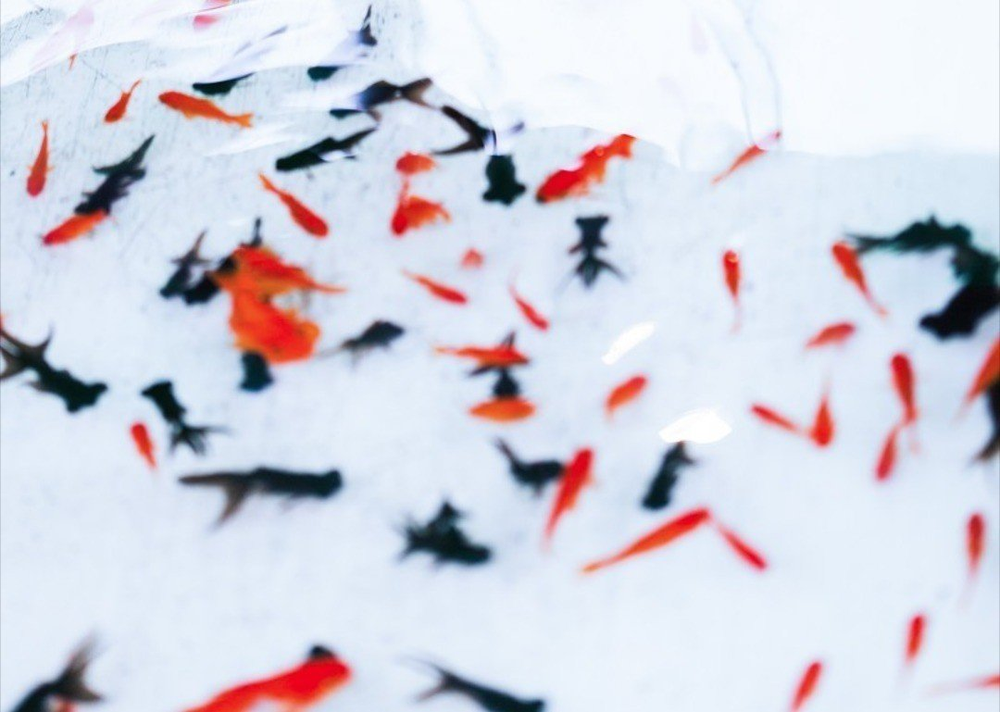

運命というものは、時にどう転ぶか分からない。
好転しているように見えても、思い違いに過ぎないことだってある。運命は姿を見せないようにまとわりつく厄介な存在なのだ。
私も間違いなく運命というものに翻弄されていた。
好々爺だと思われた爺さんが、実は大量の金魚を売り捌く人間であることが発覚し、ため息をつくほかなかった。
そもそも金魚ハンターと同じ組織の人間なのだ。なぜその爺さんが好々爺だという期待をしたのか。私の方が馬鹿だった。
ともに売りに出されようとしている金魚たちの姿は、まさに呪われた運命を背負ってしまった不運さを象徴していた。
人間たちに酷い扱いを受けた者、まだ若いのにめっきり老けこんでしまった者、生きることに希望を見出せず死ぬことにしか関心のない者。数多の金魚の中には、誰一人として今後の生き方に希望を抱いている者はいなかった。
「諸君！ こんなに多くの同士がいるのだから、我らの知恵を結集してここから逃れる方法を見つけ出そうではないか！」
爺さんが古汚い布団で眠りについたのを確認すると、そう皆に呼びかけた。自らを鼓舞したのはメイの存在だった。この運命に抗う力を、私はメイからもらっていた。
しかし誰も返答しない。私の横を無気力に通り過ぎていくだけ。
「お兄さん。悪いけどそういうのはやめたほうがいいよ。骨折り損のくたびれ儲けってやつだよ」
気弱そうな若い金魚が言う。名を聞くと、ヨスケというらしい。
「皆覚悟はできているんだ。静かにしといてあげてよ」
ヨスケは私を諭そうとしているようだ。
「私は諦めない。そんなのはご免なんだ」
そう言うと、ヨスケはくたびれた顔をして水草の中に消えていった。
「あの爺さん、一〇〇匹たまると俺らを売り飛ばすって話だぞ」
非情な空間に放り込まれた九九匹目の金魚がそう告白したのは、日が傾いた夕時のことだった。どうやらそいつが運ばれてきた際、爺さんがそう独り言を漏らしたらしい。
「いよいよか」
「今夜はゆっくりしよう」
そんな声とともに、魚群はざわつき始めた。覚悟ができているといっても、その時が訪れる恐怖を打ち消すことはできていないようだ。
「諸君。もう一度だけ言う。ここから本気で抜け出す気はないか」
落ち着いた声で再び皆に問いかけてみる。気づけば、遠くでヨスケが呆れた顔でこちらを見ている。
「別にいないのならそれでも構わん」
そう言って魚群を睨むと、ほかの金魚とは一回りも二回りも体の大きい金魚が姿を見せた。
「さっきから威勢のいいことを言っていやがるが、何か策でもあるのか？」
よく見ると、体に何ヵ所も傷がある。その傷跡がやつの只ならぬオーラを余計強めていた。
「当たり前だ。しかし、それはここにいる全員が自らの命のために逃げ延びる決意をしたら教えてやる」
私には考えがあった。しかし、それは多くの金魚たちの協力がどうしても必要だった。
「悪いが、俺たちはもう覚悟を決めたんだ。諦めてくれ」
「そう言うあんたが一番諦めきれてない目をしている」
すると、やつは私を睨んだ。
「お前に何が分かる？」
「勘違いするな。お前のことなど何も分からない。ただ、あんたの目がそういう風に見えただけだ」
数秒目を合わせた。その目は内面すら見透かしているかのようだった。
「自信はあるのか？ お前の策とやらには」
「ただの目立ちたがり屋ではない」
「もし失敗したらどうする？」
「死ぬ」
やつは一瞬驚いた顔をしたが構わず続ける。
「最初から生きることを諦めて死ぬことと、生きようとして死ぬことは意味合いが天と地ほどに違う」
「結局死ぬのであれば、その過程などどうでもいい」
「だから、私たちは必ず生き延びねばならんのだ！」
しばらくの沈黙があった。どうやらやつは私の本気度を見極めているようだった。
そして、やつは諦めたようにため息をついた。そして、思い切り息を吸い込むと金魚の魚群めがけて大きな声を出した。
「皆聞いてくれ！ 一見ショボくれたこいつがどうやら俺たちを助けてくれるらしい！ でも、それには俺たちが逃げ延びる決意をしなきゃ駄目なようだ！」
大きな声に思わず耳を塞ぎそうになったが、やつは続ける。
「一度大きな夢持ってみないか？ 一度だけでいいんだ！」
やつの声は水槽内の隅々にまで響いたが、多くの者が未だ怪訝な顔をしている。
「頼む、この通りだ」
そう言ってやつは頭を下げた。その様子を見た魚群は再びざわつき始めたが、次第に多くの金魚たちはやつの言うことに賛同していった。
その夜、私はやつの正体が気になり、ヨスケに聞いてみた。名はナイデルといって、この水槽に入れられた最初の金魚のようだった。それにナイデルは全員の金魚の顔を把握しており、この水槽内ではまさしくリーダー格らしい。
しかし、そんなナイデルも幾度の作戦を考えては実行したものの、ことごとく失敗し、いつしか逃れることを諦めてしまったようだった。
「ナイデルさんを気遣って、皆静かにしていたようなものだからね」
「なぜ今になって私の話に乗ったのだろうか？」
「さあ。そんなこと僕に分かるわけないよ」
ヨスケはそう言って、スイスイと泳いでいった。
ある夜、例によって爺さんが寝静まった後、私は皆に作戦の概要とその実行方法を伝えた。反対派が多いようにも感じたが、ナイデルが皆を諭すと私たちは入念な打ち合わせと練習に入った。
それは毎晩爺さんが夢の中に行った後に欠かさず行われた。私は作戦成功に向けて徐々に皆が絆を強めていることを肌身に感じることができた。
数日後。いよいよ作戦を実行する日がやってきた。
爺さんが一〇〇匹目の金魚を連れて部屋に入ってきたことを目視すると、ナイデルとヨスケにアイコンタクトを取った。そして、今までとは全く違う、希望を持って生きるための決意をした顔で頷き合った。
運命は確実に動いている。それはよい方向なのかどうかは分からない。でも、今は前へ進むしかないのだ。私は強くそう思っていた。